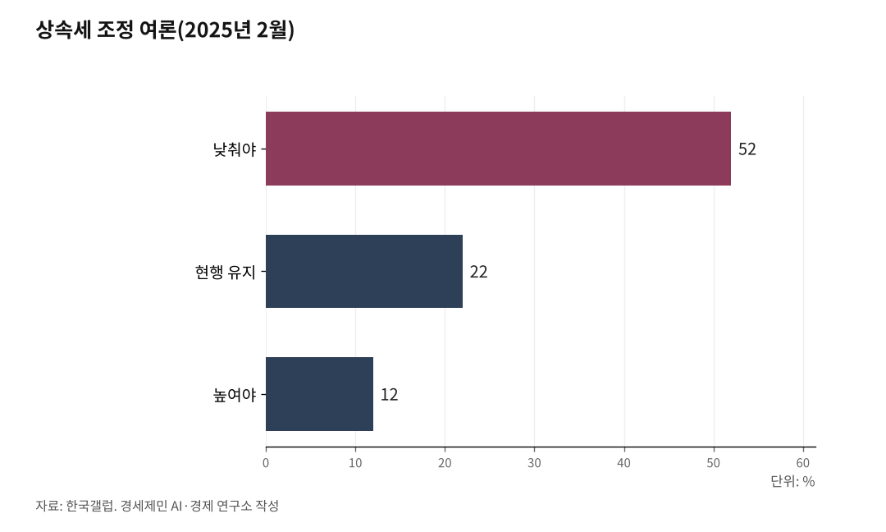

[경세제민]상속세 과세 대상 6%, 나머지 94%는 왜 겁먹나
사망자의 6%, 수도권 아파트 한 채 값에 걸린 착각
5년 20조원 감세, 혜택의 70%는 100억 초과 초고액 자산가 몫
2023년 한국에서 숨진 사람은 29만2545명. 이 가운데 상속세를 신고한 피상속인은 1만8282명, 사망자의 6.2%다. 100명이 죽으면 6명만 상속세와 관계있다. 그런데 여론조사를 하면 국민 절반 이상이 상속세를 낮춰야 한다고 답한다. 과세 대상도 아닌 94%가 왜 겁먹는가. 데이터가 답을 보여준다.

1. 사망자 100명 중 6명만 낸다
2019년 상속세 신고 피상속인은 9555명(사망자의 2.7%)이었다. 2023년엔 1만8282명(6.2%)으로 4년 만에 두 배가 됐다. 세율이나 공제가 바뀐 게 아니다. 수도권 부동산 가격이 폭등한 결과다.
구간별로 보면 상속재산 10억~20억원 구간이 7849명(42.9%)으로 가장 많다. 이 구간 1인당 평균 상속세는 7448만원, 전체 세수에서 차지하는 비중은 9.2%다. 반면 100억원 초과 구간 457명(전체의 2.5%)이 세수의 48%를 부담한다. 500억원 초과는 29명, 1인당 평균 납부세액이 310억원이다. 상속재산의 68.8%는 부동산이고, 신고 건수의 70%가 수도권에서 나왔다.

2. 왜 전국민이 반대하는가
한국갤럽이 2025년 2월 25~27일 전국 만 18세 이상 1000명을 조사한 결과, 상속세를 현행보다 낮춰야 한다는 응답은 52%, 현행 수준 유지는 22%, 높여야 한다는 응답은 12%였다. 보수층 65%, 중도층 52%가 하향에 동의했고, 진보층에서도 하향(43%)이 유지(25%)나 상향(21%)보다 많았다. 18~29세를 제외한 전 연령대에서 하향 응답이 50%를 넘었다.
숫자 뒤에 '상속세 폭탄'이라는 언론 프레임이 있다. 이 프레임이 중산층과 청년층을 잠재적 피해자로 만들었다. 실상은 다르다. 배우자와 자녀 2명이 10억원을 상속받는 일반적인 경우, 배우자 공제와 자녀 공제 등을 적용하면 과세표준이 0원이 돼 상속세를 내지 않는 경우가 많다.
3. 선진국 상속세는 어떤가
한국의 명목 최고세율은 50%로 일본(55%)에 이어 OECD 2위다. 최대주주 할증 포함 시 60%까지 올라간다. 그러나 비교를 제대로 하려면 공제 구조를 함께 봐야 한다.
미국의 기본공제는 약 205억원(2025년 1399만 달러)으로, 상위 0.1%만 과세 대상이다. 미국의 과세 대상 비율은 사망자의 0.02%다. 미국·영국·프랑스는 배우자 상속에 상속세를 전혀 매기지 않는다. 일본도 배우자의 법정상속분은 면세다. OECD 다수 국가는 배우자 상속을 전면 면세하거나 사실상 과세하지 않지만, 한국은 배우자 상속에도 본격적으로 상속세를 부과하는 몇 안 되는 나라다. 캐나다와 스웨덴은 상속세를 폐지하고 자본이득세로 대체했다. 부자 감세가 아니라 과세 방식을 바꾼 것이다.
4. 2024년 개정안, 진짜 수혜자는 누구인가
정부는 2024년 7월 세법개정안을 발표했다. 핵심은 세 가지다. 최고세율 50%→40% 인하, 자녀공제 1인당 5000만원→5억원 확대, 최대주주 할증평가 폐지. 국회예산정책처는 이 개정안이 통과될 경우 5년간 세수가 20조1862억원 줄어든다고 분석했다. 세율 인하로 11조7231억원, 자녀공제 확대로 8조4631억원이 감소한다.
감세 효과의 상당 부분, 약 70%가 상속재산 100억원 초과 구간에 귀속된다. 실효세율 인하 혜택도 이 구간에서 최대 9%포인트에 달한다. 전체 신고 건수의 2.5%인 초고액 자산가가 감세의 핵심 수혜자다. 이 개정안은 2024년 12월 10일 국회 본회의에서 부결됐다. 재석 281명 중 찬성 98명, 반대 180명이었다.
5. 자산·소득 9.6배 시대, 상속세가 마지막 보루다
피케티는 r>g, 즉 자본수익률이 경제성장률보다 높으면 부의 불평등이 구조적으로 심화된다고 증명했다. 한국의 자산·소득 배율은 2021년 9.6배다. 서울 아파트 장기 수익률은 8%대, 코스피 5%대인 반면 실질 경제성장률은 2~3%대에 머문다.
2025년 가계금융복지조사를 보면 순자산 상위 10% 가구가 전체 순자산의 46.1%를 점유한다. 2012년 이후 최고치다. 상속세를 완화한다는 것은 이 구조를 법으로 굳힌다는 뜻이다.
상속세 내는 사람은 1만8000명이다. 나머지 94%가 겁먹을 이유는 없다. 겁먹게 만드는 구조가 문제다.
참고문헌
· "상속세 신고 현황", 국세청, 2023.
· "2025년 가계금융복지조사 결과", 통계청, 2025.
· "2024년 세법개정안 분석", 국회예산정책처, 2024.
· "Inheritance Taxation in OECD Countries", OECD, 2021.
· "상속세 하향 52%·유지 22%…'최고세율 40%로 인하' 69% 찬성", 연합뉴스, 2025.2.28.